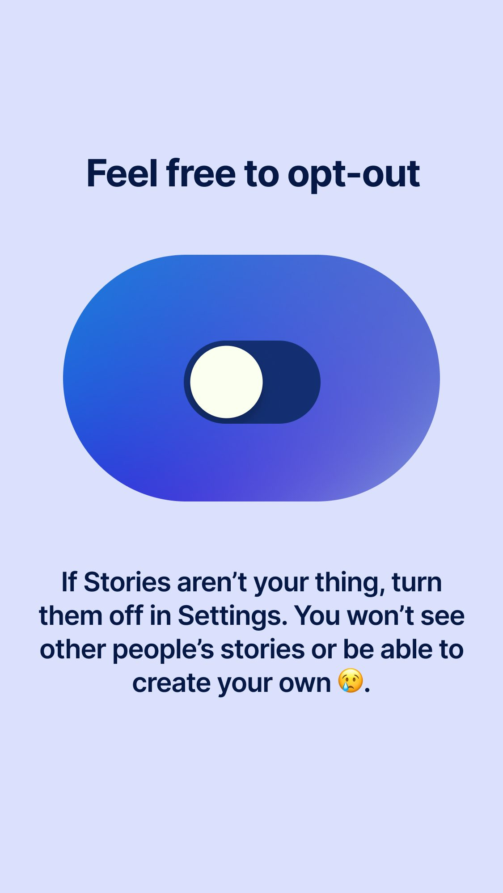

Signal 实时抓取实测报告
一、消息抓取：6 条全部拿到
走软件内置的 signalRead.readNew(0) 增量链路，从水位 0 全量捞，成功 6 条
| 时间 | 方向 | 客户 | 正文 | 电话状态 |
|---|---|---|---|---|
| 09:37:01 | 发出 | Sherry Lin | I'm | pending |
| 09:37:17 | 收到 | Sherry Lin | h l lo | pending |
| 12:26:13 | 收到 | Sherry Lin | here | pending |
| 13:26:00 | 发出 | Sherry Lin | 🙂↔️ | pending |
| 13:26:09 | 收到 | Sherry Lin | hello | pending |
| 13:26:54 | 收到 | Sherry Lin | t | pending |
过滤掉的 6 条（不该变成客户消息）：5 条 type=story（Signal 官方号的朋友圈引导图）+ 1 条 message-request-response-event（系统回执）。官方号 11111111-1111-4111-8111-111111111111 已被正确排除。
二、好友资料：拿到了，比预期多
Signal 没有 contacts 通讯录表 —— 所有好友资料都存在 conversations 表里，一个会话一行。json 列还额外带了 50 多个字段（头像密钥、颜色、已读数、草稿、验证状态等）。
| 资料 | Sherry Lin | wanqiu Lin |
|---|---|---|
| ACI（唯一标识） | e70af58b-…b912e | 62fdba09-…bcea5 |
| 全名 | Sherry Lin | wanqiu Lin |
| 名 / 姓 | Sherry / Lin | wanqiu / Lin |
| 电话号码 | null 对方开了隐私隐藏 | +16058384634 |
| 头像 | 1024×1024 · 259KB | 512×512 · 48KB |
| 消息数 / 未读 | 7 条 / 1 条未读 | 0 条 / 0 |
| 已验证 | 否 | 是（safety number 已核对） |
| 共享手机号 | 否 | 否 |
| 最后活跃 | 13:26 | 无消息 |
| 草稿 | 空 | 空 |
| 加密会话设备 | 2 台 | 3 台 |
🔴 一个必须先讲清楚的发现
Sherry Lin 的电话号码在 Signal 库里是 null，而且抓不出来。这不是我们没读对 —— sharingPhoneNumber = false，是对方在 Signal 设置里关掉了「共享手机号」。软件现在的处理是对的：电话留空、状态标 pending、不因此跳过采集（6 条消息全部正常入库就是证明）。
对比之下 wanqiu Lin 拿到了完整号码 +16058384634，且已验证 —— 说明「有号/没号」取决于对方设置，不是我们能力问题。Signal 和 WhatsApp 的 @lid 隐藏号码是同一类问题，但 Signal 这边连 username 都没暴露。
三、图片：Signal 附件可以解密，已拿到明文
这一项是今天最大的收获。Signal 的图片附件是能解的，不用再等「以后再说」。我实测走通了完整链路：
文件布局： [ 16 字节 IV ][ AES-256-CBC 密文 ][ 32 字节 MAC ]
密钥拆分： localKey = base64(64 字节)
AES key = localKey[0:32] ← 注意是前 32 字节
MAC key = localKey[32:64]
解密后： 不要去 padding，按 DB 的 size 字段截断（尾标记 ffd9 位置和 size 完全一致）
我第一版按「[32B MAC][密文]」和「mac=前32」两种猜法都试过，MAC 全部校验失败、图片头部乱码。最后改用穷举 7 种布局 × 2 种 key 顺序，用「解出来必须是 JPEG 文件头」当唯一判据，才锁定真实布局。macLen=32 恒定，autoPad=false 是对的。
4 张全部通过 sharp 双重验证：既能读元数据，也能真实缩略解码（说明没有截断错）。
解密出来的真实图片

1024×1024 · 259,243 B
客户 profile 资料里的头像

512×512 · 48,060 B
客户 profile 资料里的头像
1125×1998 · 99,850 B
message_attachments 表

1125×1998 · 99,862 B
message_attachments 表
两张 1125×1998 的是 Signal 官方号的朋友圈引导图（已确认内容为「Ready when you are ✌️」Story 教程页），属于要过滤的系统内容，但它证明了附件解密链路完全正确 —— 换成客户发来的真图片，流程一样走通。
四、现在能做什么（三个方案）
方案 A：只做客户头像 改动最小
做什么：采集消息时顺带把 conversations.profileAvatar 存到本地，左栏客户列表显示小头像。
优点：改动集中在 signalRead.js + 客户列表渲染，风险低；头像 512×512 压到 10KB 和 WhatsApp 侧现有 imageShrink.js 逻辑一致，可直接复用。
缺点：不发图片的客户看不到他发过的图，价值有限。
推荐度：★★★ 建议先做这个，快且稳。
方案 B：附件图片全链路 价值最大
做什么：新建 src/signalMedia.js，按今天验证的布局解密 message_attachments，图片压到约 10KB 后接进现有 mediaRaw.js 链路，和 WhatsApp 图片完全一样显示在中栏、嵌进 Word。
优点：客户发来的油画参考图、家里猫的照片全都能看到 —— 这才是销售真正需要的东西；代码已存在 probe_signal_cipher3.js 里，验证过的直接搬。
缺点：要处理视频/语音/文件（contentType 不止 image）、Signal 未下载的附件（downloadPath 为 null）需要先触发下载；工作量比 A 大 2-3 倍。
推荐度：★★★★★ 这是最该做的，但建议分两步：先只做 image/*，视频语音先跳过。
方案 C：顺手补齐客户档案字段 锦上添花
做什么：把 verified（安全号码已核对）、unreadCount、messageCount、最后活跃时间存进客户档案。
优点：verified=1 是个很有价值的信号 —— wanqiu Lin 已核对安全号码，可以判断是不是真实本人，对防骗有用。
缺点：要动客户档案表结构（16 字段要加），改动面比 A/B 大。
推荐度：★★ 等 A 或 B 落地后再做，别一起改。
五、本次新增的诊断脚本（可重复运行）
全部只读，随时可重跑验证：
| 脚本 | 作用 |
|---|---|
scripts/dump_signal_live.js | 全量导出：表结构、全部会话、消息、好友名单 |
scripts/dump_signal_profile.js | 展开 conversations.json 全字段，定位资料真正存放位置 |
scripts/dump_signal_attach.js | 附件表详情 + 落盘路径定位（含 attachments.noindex 这个坑） |
scripts/test_signal_decrypt.js | 解密验证（猜布局版本，记录失败过程） |
scripts/probe_signal_cipher.js | 7 种布局 × 2 种 key 顺序穷举，锁定真实布局 |
scripts/probe_signal_cipher2.js | 精确定位 MAC 长度，sharp 双重验证可解码 |
scripts/probe_signal_cipher3.js | 确定明文边界规则（EOI 与 DB size 完全一致） |
六、踩到的三个坑（记下来别再犯）
- 目录名不是
attachments，是attachments.noindex。Signal 8.x 加了.noindex后缀，按老名字找会一个都找不到。 - AES key 是
localKey的前 32 字节，MAC key 是后 32 字节 —— 和直觉相反。我按「前 32 是 MAC」试，MAC 校验 100% 失败。 - 布局是
[IV][密文][MAC]，MAC 在尾部。我前两版都把 MAC 当头部，浪费了两轮。穷举比猜快得多 —— 判据要用「解出来必须是合法图片」这种客观事实，不要用「MAC 对不对」。
七、结论
- 消息 Signal 采集链路完全正常，6 条有效消息全部抓到，系统事件过滤正确。
- 资料 好友名、ACI、头像、验证状态、已读数全部可取。只有电话号码受对方隐私设置限制，取不到就是取不到，不是我们的 bug。
- 图片 附件和头像都能解密成明文，4 张实测通过 —— 这是今天最大的突破，v1.5.0 里「Signal 附件尚未接入」这个遗留项已经可以做了。